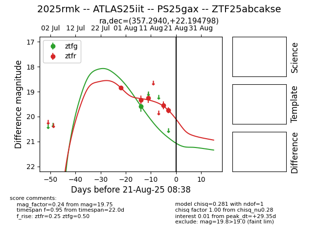

Target 2025rmk at 2025-08-21 09:16, see:
FINK: fink-portal.org/ZTF25abcakse
Lasair: lasair-ztf.lsst.ac.uk/objects/ZTF25abcakse
ALeRCE: alerce.online/object/ZTF25abcakse
TNS: wis-tns.org/object/2025rmk
YSE: ziggy.ucolick.org/yse/transient_detail/2025rmk
alt names
ZTF25abcakse (ztf,alerce)
2025rmk (tns,yse)
ATLAS25iit (atlas)
PS25gax (panstarrs)
coordinates:
equatorial (ra, dec) = (357.2940,+22.19480)
galactic (l, b) = (104.4401,-38.43094)
photometry
last ztfg=19.58, ztfr=19.75
1 ztfg, 5 ztfr detections
